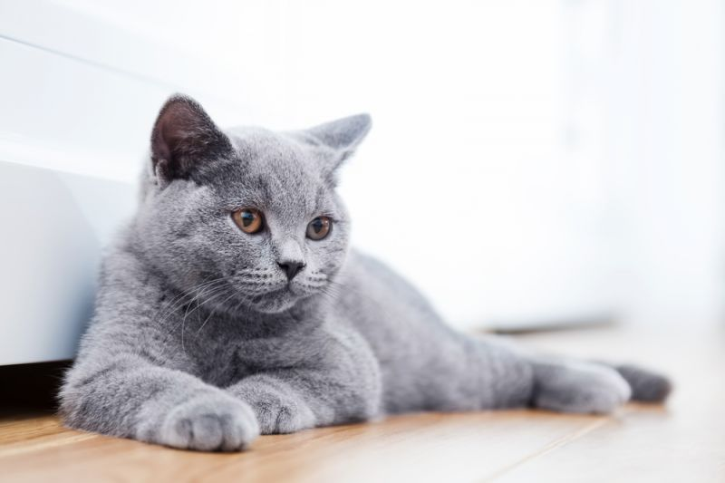

Британская короткошерстная кошка — идеальный домашний питомец для тех, кто любит покой и тишину. Представители этой породы — настоящие английские аристократы, которые ни за что не позволят себе слишком активных игр и пустого бега по квартире. Взрослый британец — образец серьезности, независимости и сдержанности. Вместе с тем котята этой породы достаточно активны и любопытны, поэтому нуждаются в воспитании с самого рождения. Британские короткошерстные кошки прекрасно подходят людям, которые не привыкли проводить слишком много времени дома. Эти кошки не будут страдать и грустить в отсутствие человека. Однако это вовсе не говорит о том, что они не любят своего хозяина. Наоборот, в отличие от многих других представителей кошачьих, британцы привязываются ко всем членам семьи, не делая исключений. Несмотря на независимость, британская короткошерстная кошка требует к себе внимания. И жестоко наказывает владельца, который не уделяет ей такового. С британцем необходимо играть, разговаривать и, конечно, ласкать и гладить. Но делать это стоит только тогда, когда у кошки будет настроение. Иначе бестактное поведение может быть расценено как попытка нарушить устоявшиеся правила общения и личное пространство питомца. Чистокровный британец очень хорошо уживается с другими животными, в том числе с собаками, благодаря уравновешенности характера и интеллекту. Эти кошки отлично ладят с детьми, и, если в семье есть ребенок, вероятнее всего, именно к нему британец будет относиться лояльнее всех.
